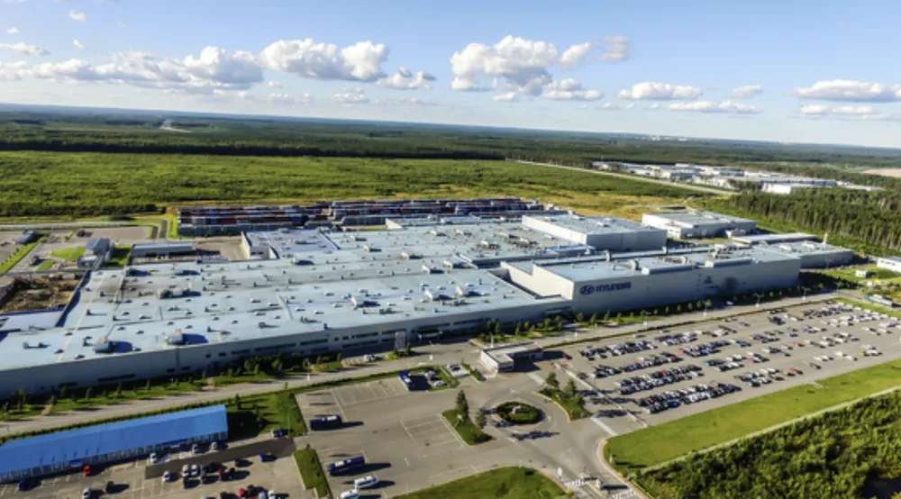
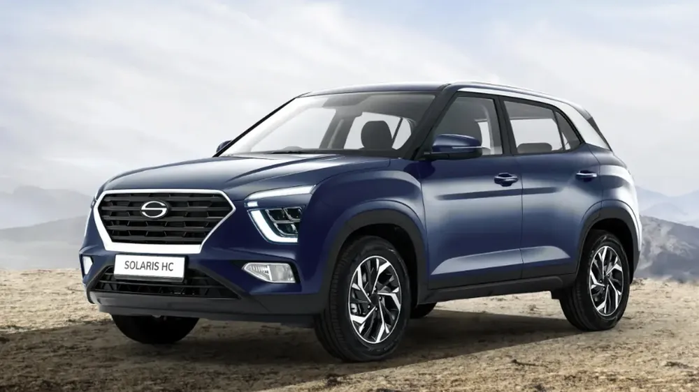
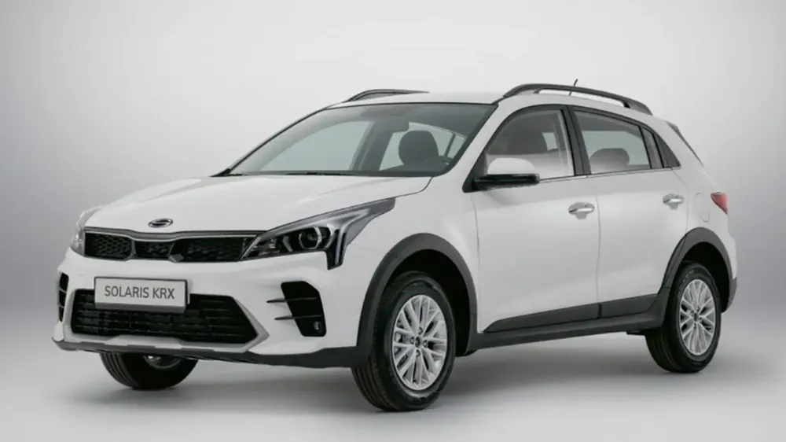
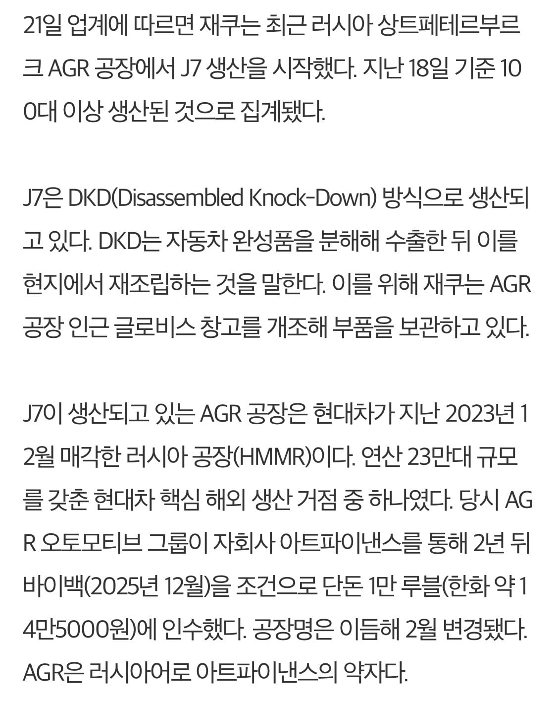

러시아 세스트로레츠크에 있는 상트페테르부르크 공장
우러전때 러시아가 비동맹국(우호국) 기업들 철수하거나 활동 중지하면 국유화 한다는 법령을 내림.
현대 공장 같은 경우 활동 정지가 아니라 당시 러시아 제제로 대금도 못받고 부품도 안들어와서 관리비 돈은 돈대로 빠져나가는 중인데, 이걸 또 활동정지로 봐서 빼았길 위기에 있었음.
그래서 걍 공장을 1만 루블(대략 14만원)을 받고 팔 되, 2년 후 바이백 옵션을 넣음.
허나 전쟁이 장기화 되고, 돌아가도 14만원에 되사는게 아니여서 결국 옵션 포기.
이때 공장을 인수한 AGR이 쏠라리스라는 브랜드로, 공장을 활용하여 차를 판매하는데...


수상하게도 현대차와 기아차를 티를 내며(이름에 H,KR이 들어간) 닮은 차들이 판매됨 ㅋㅋㅋㅋ
아마 현대차가 두고 떠난 부품들을 가지고 이것저것 추가로 넣고 조립해서 판매한걸로 봄 (당연 로열티 X)
부품이 다 떨어졌는지, 올해 마지막 생산 후 판매 종료 예정임
그럼 이 공장으로 뭘 하냐고?

쭝궈차 조립한다고 함
현대 철수 후 8퍼 였던 러시아의 중국차 점유율은 40퍼까지 오름
러시아 입장에서는 중국이 고마운 나라야?